Image Captioning on Flickr8k
A ViT–attention–LSTM captioner, derived from the objective down to the tensor shapes
A classifier picks one label from a fixed list. This model picks a word from 2,512 at each of up to thirty steps, decides for itself when to stop, and can show you which part of the photograph it was looking at for every one of them.
That last part is the interesting half, and it is the half that is easiest to get wrong. An attention layer given a single image vector has one place to look, so its weights are 1 by construction: a heat map that means nothing, over a model that could still be scoring well. Making attention real is what the first half of this page is about; the panel further down is what it buys you.
Write \(V\) for that vocabulary and \(T\) for the length the model settles on. The output space is then \(\lvert V \rvert^T\) possible sequences, and \(T\) is not known before decoding starts. Scoring that space directly is out of reach, so the distribution over sequences is factorised by the chain rule into \(T\) conditionals, each over a single token:
\[ p(y_{1:T} \mid I) \;=\; \prod_{t=1}^{T} p\bigl(y_t \mid y_{<t},\, I\bigr) \]
This factorisation is the design. It says the model needs one component that encodes \(I\), one that maintains a representation of the prefix \(y_{<t}\), and one that maps the pair to a distribution over \(V\). Those become the encoder, the recurrent decoder and the output projection. The same factorisation sets the training objective and the decoding algorithm.
Everything below follows that structure, in order, with the shape of each tensor stated as it appears. The notebook implements it and runs end to end in Colab; a completed twenty-epoch run supplies every number on this page.
Notation
| Symbol | Meaning | Value here |
|---|---|---|
| \(I\) | input image | \(3 \times 224 \times 224\) |
| \(N\) | number of encoder patch tokens | \(196\) |
| \(D\) | ViT hidden width | \(768\) |
| \(d\) | projected feature width | \(512\) |
| \(d_h\) | decoder hidden width | \(1024\) |
| \(d_a\) | attention width | \(512\) |
| \(H\) | attention heads | \(8\) |
| \(\lvert V \rvert\) | vocabulary size | \(2{,}512\) |
| \(T\) | caption length in tokens | \(\le 30\) |
The supervision signal
Flickr8k holds 8,091 photographs and 40,455 captions. Every image carries exactly five, written independently. The corpus runs to 437,451 word tokens over 8,446 distinct types, and a caption averages 10.8 words (median 10, 95th percentile 18, longest 36).
Those five are not redundancy. They say the target is a distribution over descriptions rather than a single string. For one image:
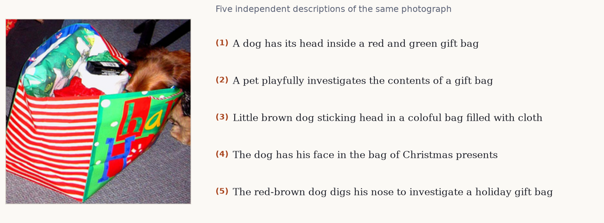
Two consequences follow, and they pull in opposite directions.
Evaluation must credit any adequate description, so metrics score a hypothesis against the full reference set \(R_i = \{r_i^{(1)}, \dots, r_i^{(5)}\}\). Training by maximum likelihood requires a single target sequence per example, because the cross-entropy at step \(t\) is defined against one token.
The notebook resolves this asymmetry by split. The training set samples \(r \sim \mathrm{Uniform}(R_i)\) on each access, which acts as a mild regulariser over paraphrase. The validation and test sets fix \(r_i^{(1)}\).
That second choice matters more than it appears. Model selection and early stopping both read validation loss. If the validation target were resampled each epoch, the sequence \(\{\mathcal{L}_{\text{val}}^{(e)}\}_e\) would contain variance from target resampling as well as from the parameters, and \(\arg\min_e \mathcal{L}_{\text{val}}^{(e)}\) would partly select for a favourable draw. Fixing the reference makes the validation loss a function of the parameters alone.
The partition itself:
| Split | Images | Captions |
|---|---|---|
| Train | 5,663 | 28,315 |
| Validation | 1,214 | 6,070 |
| Test | 1,214 | 6,070 |
Split protocol. A 70/15/15 partition seeded at 42, taken over image identities rather than over image–caption pairs. Splitting over pairs would put different captions of the same photograph on both sides of the boundary, which leaks test images into training.
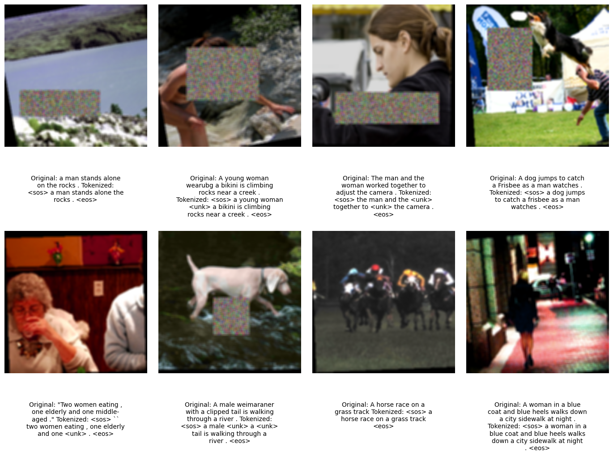
Tokenisation and the vocabulary
Captions are lowercased and word-tokenised. The vocabulary keeps types with frequency \(\ge 5\) counted on the training split alone; counting across all splits would leak test-set lexical statistics into the model.
That threshold applied to the full corpus would keep 2,971 of the 8,446 types and still cover 97.90% of tokens. Restricted to the 28,315 training captions it yields 2,512 entries, the four reserved symbols included, so 2,508 words, and everything else maps to <unk>.
| Token | Role |
|---|---|
<sos> |
initial decoder input \(y_0\), before any token is emitted |
<eos> |
absorbing symbol; emitting it defines \(T\) |
<pad> |
batch alignment filler, masked out of the loss |
<unk> |
image of every out-of-vocabulary type |
The frequency threshold trades coverage against estimation quality. A type appearing twice supplies two gradient signals to a \(d\)-dimensional embedding, which is not enough to place it meaningfully, while still contributing \(d\) parameters and an opportunity to overfit. Mapping the tail to <unk> concentrates the capacity on types the data can actually constrain.
<eos> makes \(T\) a learned quantity. The model is never told the caption length; it induces a halting distribution, and mis-calibrated halting shows up as captions that terminate early or run on.
Padding and loss masking. Sequences in a minibatch are padded to \(T_{\max}\). The loss sums only over positions where the target is not <pad>. Without the mask, the model receives gradient for predicting padding, which is trivially learnable and dilutes the useful signal.
Encoder: ViT-B/16 patch features
The encoder is a Vision Transformer pretrained on ImageNet. It reshapes \(I \in \mathbb{R}^{3 \times 224 \times 224}\) into non-overlapping \(16 \times 16\) patches, giving
\[ N \;=\; \frac{224 \times 224}{16 \times 16} \;=\; 196 \]
tokens arranged on a \(14 \times 14\) lattice. Each is linearly embedded to \(\mathbb{R}^{768}\), summed with a positional embedding, and passed through 12 pre-norm transformer blocks. The output is \(a \in \mathbb{R}^{196 \times 768}\), plus a prepended class token \(a_{\text{cls}}\).
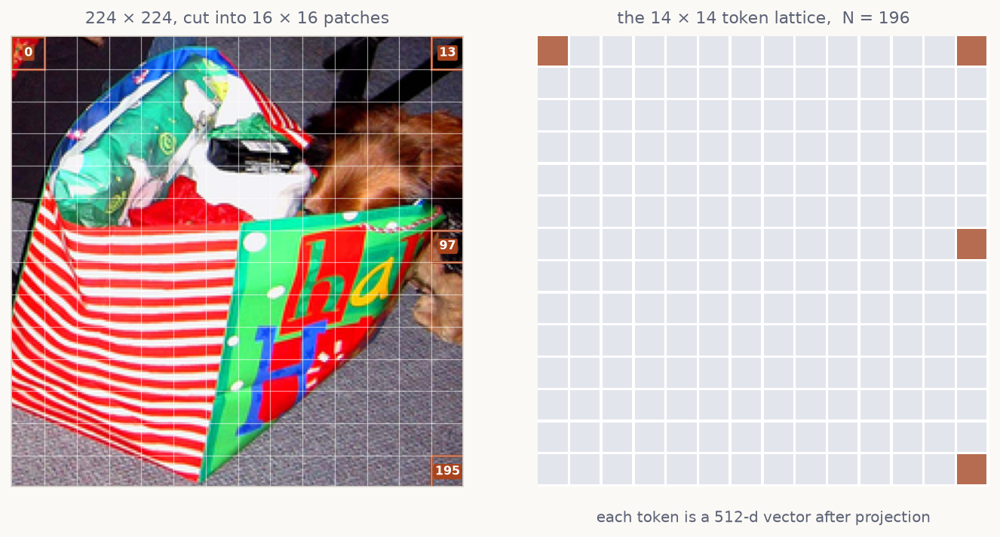
The positional embeddings preserve the correspondence between token index and image region through every block. This is the property the rest of the model depends on: any distribution over the 196 tokens can be reshaped to \(14 \times 14\) and resampled to image resolution.
A ViT used for classification discards \(a\) and keeps \(a_{\text{cls}}\). Taking that route here collapses the conditioning signal to a single vector, and an attention distribution over one position satisfies \(\alpha = 1\) identically: the softmax is degenerate and carries no information about the query. The encoder therefore returns the patch tokens and drops \(a_{\text{cls}}\).
A projection maps each token to the decoder’s width,
\[ \tilde{a}_i \;=\; \mathrm{BN}\bigl(\mathrm{Dropout}(\mathrm{ReLU}(W_p a_i + b_p))\bigr), \qquad W_p \in \mathbb{R}^{512 \times 768} \]
yielding \(\tilde{a} \in \mathbb{R}^{196 \times 512}\). Batch normalisation is applied over the feature axis with the patch axis folded into the batch, so the statistics are computed across \(B \cdot 196\) vectors.
Partial fine-tuning. The last four of twelve blocks are unfrozen; blocks 0–7 and the patch embedding stay fixed. Early transformer blocks encode low-level and generic structure that transfers across datasets, while later blocks encode dataset-specific semantics that benefit from adapting. Freezing the early stack also removes their parameters, gradients and optimiser moments from memory, which is what makes fine-tuning viable at this batch size.
Attention over the patch lattice
The decoder needs a different view of the image at different steps: the token dog and the token grass are supported by different regions. A fixed conditioning vector forces one representation to serve every step. Attention replaces it with a query-dependent convex combination.
At step \(t\) the previous hidden state \(h_{t-1} \in \mathbb{R}^{1024}\) forms a query, and the patch features form keys and values:
\[ q_t = W_q h_{t-1}, \qquad k_i = W_k \tilde{a}_i, \qquad v_i = W_v \tilde{a}_i \]
with \(W_q \in \mathbb{R}^{512 \times 1024}\) and \(W_k, W_v \in \mathbb{R}^{512 \times 512}\). Scaled dot-product attention gives the weights
\[ \alpha_{t,i} \;=\; \frac{\exp\!\left( q_t^{\top} k_i / \sqrt{d_k} \right)} {\sum_{j=1}^{196} \exp\!\left( q_t^{\top} k_j / \sqrt{d_k} \right)}, \qquad z_t \;=\; \sum_{i=1}^{196} \alpha_{t,i}\, v_i \]
The \(1/\sqrt{d_k}\) scaling is not cosmetic. For \(q, k\) with independent zero-mean unit-variance components, \(q^{\top}k\) has variance \(d_k\); without rescaling, the logits grow with dimension, the softmax saturates, and its Jacobian vanishes. Here \(d_k = d_a / H = 512/8 = 64\).
The computation runs in \(H = 8\) heads with separate projections, concatenated and mapped back to \(\mathbb{R}^{1024}\). Distinct heads can place mass on distinct regions at the same step, so the context is not restricted to a single unimodal focus.
Because \(\sum_i \alpha_{t,i} = 1\) over the 196 lattice positions, the vector \(\alpha_t\) reshapes to \(14 \times 14\) and upsamples to \(224 \times 224\). This is the model’s only directly interpretable internal quantity: it states which regions supported each emitted token. It is a description of the computation, not a causal claim about the prediction.
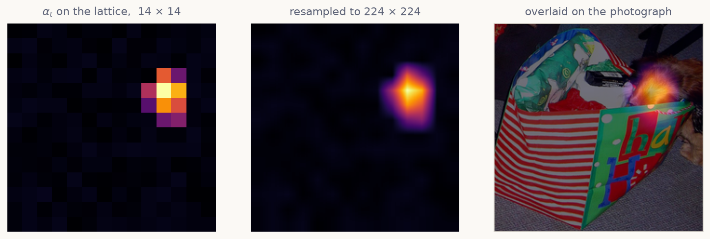
Decoder: an LSTM over the factorised conditionals
Each factor \(p(y_t \mid y_{<t}, I)\) is realised by an LSTM cell whose state summarises the prefix. The cell is stepped explicitly rather than run as a sequence layer, because \(z_t\) depends on \(h_{t-1}\) and must be recomputed between steps.
The state is initialised from the mean patch feature, giving a global summary before attention narrows it:
\[ h_0 = W_h \left( \frac{1}{196}\sum_{i=1}^{196} \tilde{a}_i \right), \qquad c_0 = W_c \left( \frac{1}{196}\sum_{i=1}^{196} \tilde{a}_i \right) \]
The input at step \(t\) concatenates the embedded previous token with the context, \(x_t = [\,E y_{t-1} \,;\, z_t\,] \in \mathbb{R}^{512 + 1024}\), and the cell applies its gates:
\[ \begin{aligned} f_t &= \sigma(W_f x_t + U_f h_{t-1} + b_f) &\quad c_t &= f_t \odot c_{t-1} + i_t \odot g_t \\ i_t &= \sigma(W_i x_t + U_i h_{t-1} + b_i) &\quad h_t &= o_t \odot \tanh(c_t) \\ o_t &= \sigma(W_o x_t + U_o h_{t-1} + b_o) & & \\ g_t &= \tanh(W_g x_t + U_g h_{t-1} + b_g) & & \end{aligned} \]
The additive update to \(c_t\), gated by \(f_t\), is what gives the LSTM a gradient path across many steps that does not decay multiplicatively, which is the difficulty a plain RNN has over caption-length sequences.
Logits follow from a linear read-out, \(\ell_t = W_{\text{out}} h_t \in \mathbb{R}^{|V|}\), and \(p(y_t \mid y_{<t}, I) = \mathrm{softmax}(\ell_t)\).
-
0 input
<sos> - 1 a
- 2 brown
- 3 dog
- 4 runs
- 5 through
- 6 the
- 7 grass
-
8 halt on
<eos>
The training objective
Maximum likelihood over the factorisation is cross-entropy summed over positions. With label smoothing at \(\varepsilon = 0.1\), the target distribution at each step is
\[ q'(k \mid y_t) \;=\; (1-\varepsilon)\,\delta_{k, y_t} \;+\; \frac{\varepsilon}{|V|} \]
and the per-example loss, masked to non-padding positions, is
\[ \mathcal{L} \;=\; -\frac{1}{\sum_t m_t} \sum_{t=1}^{T} m_t \sum_{k=1}^{|V|} q'(k \mid y_t)\, \log p(k \mid y_{<t}, I), \qquad m_t = \mathbb{1}[y_t \neq \texttt{<pad>}] \]
Smoothing is motivated directly by the five-reference structure. The one-hot target asserts that the sampled reference is the only admissible continuation, when in fact dog and puppy are both supported. Driving \(p \to 1\) on one arbitrary draw produces a model whose confidence is not calibrated to the ambiguity actually present in the data.
Optimisation
AdamW decouples \(L_2\) regularisation from the adaptive moment estimates, so weight decay \(\lambda = 10^{-5}\) acts as intended rather than being rescaled by the per-parameter second moment. The base rate is \(\eta = 3 \times 10^{-4}\).
The schedule is cosine annealing with warm restarts, which within restart period \(T_i\) follows
\[ \eta_t \;=\; \eta_{\min} + \tfrac{1}{2}\,(\eta_{\max} - \eta_{\min}) \left(1 + \cos\!\left(\pi \frac{T_{\text{cur}}}{T_i}\right)\right) \]
with \(T_0 = 10\), \(T_{\text{mult}} = 2\), \(\eta_{\min} = 10^{-6}\). The restarts produce discontinuities in the loss curve by construction; they are not instability.
Three further mechanisms are standard but interact, so their order matters. Mixed precision keeps activations in float16 with a dynamically scaled loss to keep small gradients representable. Gradient accumulation over \(k = 4\) minibatches of 32 gives an effective batch of 128 without the corresponding memory. Gradient clipping bounds the update by rescaling when \(\lVert g \rVert_2
> 1\).
The ordering constraint: the gradients must be unscaled before the norm is computed, or the clipping threshold is applied to loss-scaled gradients and the effective bound becomes the scale factor times \(1\). The accumulated loss must also be divided by the true number of minibatches in its group, which differs from \(k\) for the final partial group when the loader length is not divisible by \(k\).
Exposure bias and scheduled sampling
Training by maximum likelihood conditions each step on the ground-truth prefix, \(p(y_t \mid y_{<t}^{\star}, I)\). Inference conditions on the model’s own prefix, \(p(\hat{y}_t \mid \hat{y}_{<t}, I)\). The distribution of prefixes at test time is therefore not the distribution the model was trained on. This is exposure bias. Its practical signature is a model that is fluent under teacher forcing and degrades once an early error moves it off the data manifold, with no training experience of recovering.
Scheduled sampling interpolates between the two regimes. At step \(t\) the decoder input is drawn as
\[ \tilde{y}_{t-1} \;=\; \begin{cases} y_{t-1}^{\star} & \text{with probability } \epsilon_e \\[2pt] \hat{y}_{t-1} = \arg\max_k p(k \mid \tilde{y}_{<t-1}, I) & \text{with probability } 1 - \epsilon_e \end{cases} \]
where the teacher-forcing rate \(\epsilon_e\) decays over epochs \(e\) from 1 toward a floor. Early training keeps \(\epsilon_e\) near 1, when the model’s own predictions would be uninformative; later training exposes it to its own outputs, once those are good enough to condition on. The substitution applies in training mode only; evaluation is always fully autoregressive.
Decoding
Training defines the conditionals. Decoding is the separate problem of finding a high-probability sequence under them, and exact search over \(|V|^T\) is intractable.
Greedy decoding takes \(\hat{y}_t = \arg\max_k p(k \mid \hat{y}_{<t}, I)\) at each step. It is \(O(T)\) forward passes and optimises each factor in isolation, which does not optimise the product: a locally dominant token can precede a low-probability continuation with no mechanism for revision.
Beam search maintains \(B = 5\) partial hypotheses ranked by accumulated log-probability,
\[ s(\hat{y}_{1:t}) \;=\; \sum_{\tau=1}^{t} \log p(\hat{y}_\tau \mid \hat{y}_{<\tau}, I) \]
expanding each by its top-\(B\) continuations and retaining the \(B\) best. Cost is \(O(BT)\) forward passes. Because the score is a sum of negative terms, it decreases monotonically with length, which biases beam search toward short hypotheses and motivates length normalisation in longer-form generation.
Autoregressive decoders with limited conditioning are prone to degenerate repetition. A repetition penalty \(\rho = 1.2\) discounts a token already present in the hypothesis. Since the scores are log-probabilities and therefore negative, the penalty must multiply:
\[ s' \;=\; s + \rho \cdot \log p(\hat{y}_t \mid \cdot), \qquad \log p < 0 \]
Dividing by \(\rho\) moves the score toward zero and raises the rank of a repeated token, the sign error that implements the opposite of the intent.
Evaluation
Sequence generation has no notion of exact-match accuracy: a caption sharing no \(n\)-grams with any reference may still be a correct description.
BLEU scores modified \(n\)-gram precision against the reference set. For order \(n\), with clipping against the maximum count in any single reference,
\[ p_n \;=\; \frac{\sum_{C \in \text{cand}} \sum_{g \in n\text{-}\mathrm{grams}(C)} \min\bigl(\mathrm{count}(g),\, \max_r \mathrm{count}_r(g)\bigr)} {\sum_{C \in \text{cand}} \sum_{g \in n\text{-}\mathrm{grams}(C)} \mathrm{count}(g)} \]
Precision alone rewards short output, so a brevity penalty applies, with \(c\) the candidate length and \(r\) the effective reference length:
\[ \mathrm{BP} = \begin{cases} 1 & c > r \\ e^{1 - r/c} & c \le r \end{cases} \qquad \mathrm{BLEU} = \mathrm{BP} \cdot \exp\left( \sum_{n=1}^{4} w_n \log p_n \right) \]
The weights are uniform over the orders scored: \(w_n = 1/3\) for BLEU-3, \(1/4\) for BLEU-4. Because the geometric mean is zero whenever any \(p_n = 0\), sentence counts are smoothed; the notebook uses NLTK’s method 4.
These formulas are easier to believe once you have moved them. The panel below scores whatever you type against the five references listed in it, the real ones for the gift-bag photograph near the top of the page. Nothing is smoothed, so a zero stays a zero.
Reading BLEU-1 against BLEU-4 separates two abilities. BLEU-1 responds to lexical selection: whether the right entities were named. BLEU-4 responds to local word order and phrasing. A model with adequate vocabulary and weak sequential structure shows a steep decline across the orders.
What BLEU does not measure. BLEU is \(n\)-gram overlap with a finite reference set. A description that is accurate but lexically distinct from all five references scores low, and a fluent description that names the wrong entity can score well on BLEU-1. The metric is a proxy; the generated captions and the attention maps are the evidence that tells you which kind of score you have.
A pretrained reference point
Absolute BLEU values on Flickr8k are not interpretable without a comparison. BLIP supplies one: a vision–language model pretrained with bootstrapped captions on web-scale image–text pairs, evaluated here with published weights and no Flickr8k training.
The comparison is between systems with different training histories, not between architectures under matched conditions. Its validity rests on holding the protocol fixed on both sides: the same test images, the same reference sets, the same decoding configuration, and, easy to overlook, the same tokenisation. Scoring one system’s output with a whitespace split while the references are word-tokenised leaves punctuation attached to adjacent words and suppresses every \(n\)-gram containing it, penalising the measurement rather than the model.
Training dynamics
Twenty epochs. Batch 32, accumulated to an effective 128. 45,727,184 trainable parameters once the last four ViT blocks are unfrozen.
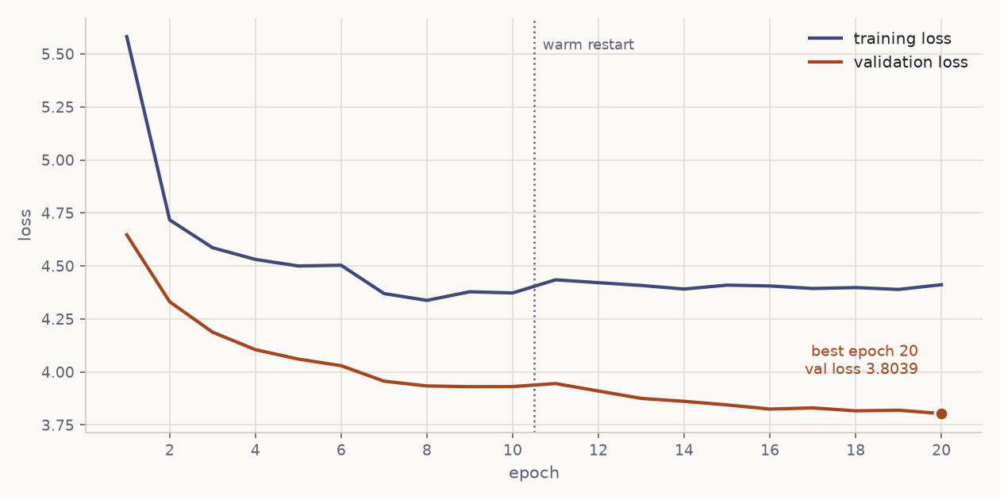
Validation loss sits below training loss for the whole run. The two are measured under different conditions: training sees augmented images, a sampled reference, token dropout, label smoothing and scheduled sampling; validation sees clean transforms, a fixed reference and teacher forcing. The training task is harder, so its loss is higher.
The run ends at 3.8039, still falling, with early stopping never triggered.
The schedule ran out before the model did. Nothing here looks like convergence, so every number below is a floor.
The two criteria disagree
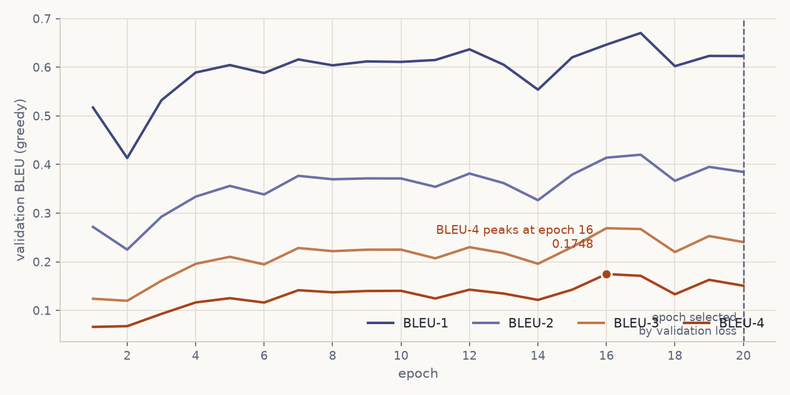
BLEU-4 peaks at epoch 16 (0.1748) and ends at 0.1508. Validation loss improves to the last epoch. They point at different checkpoints.
Cross-entropy rewards probability mass on the reference token. BLEU rewards n-grams that survive decoding. A model can sharpen its distributions while its decoded output drifts toward safe, generic phrasing that matches fewer 4-grams. The brief asks for validation loss, so epoch 20 is kept.
Decoding moves the number more than the weights do
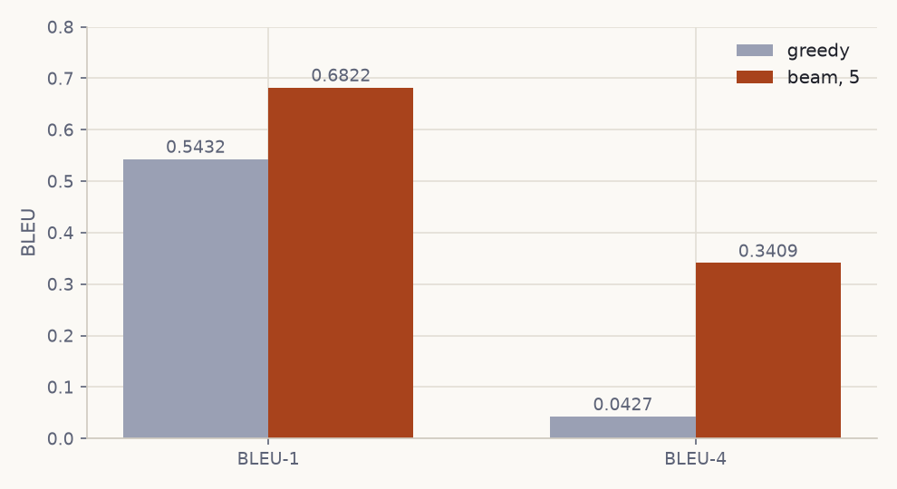
| BLEU-1 | BLEU-4 | |
|---|---|---|
| Greedy | 0.5432 | 0.0427 |
| Beam, width 5 | 0.6822 | 0.3409 |
An eightfold BLEU-4 change from touching no parameter. Greedy commits to the top token at each step and this decoder falls into repetition loops it cannot escape. Five live hypotheses let a second-best token prove itself, and the repetition penalty stops the beams collapsing onto one loop. Sharper per-token distributions would narrow that gap.
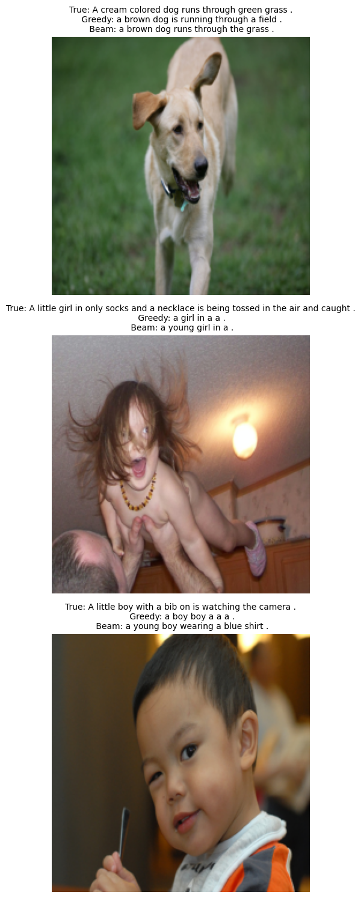
Where the model looks
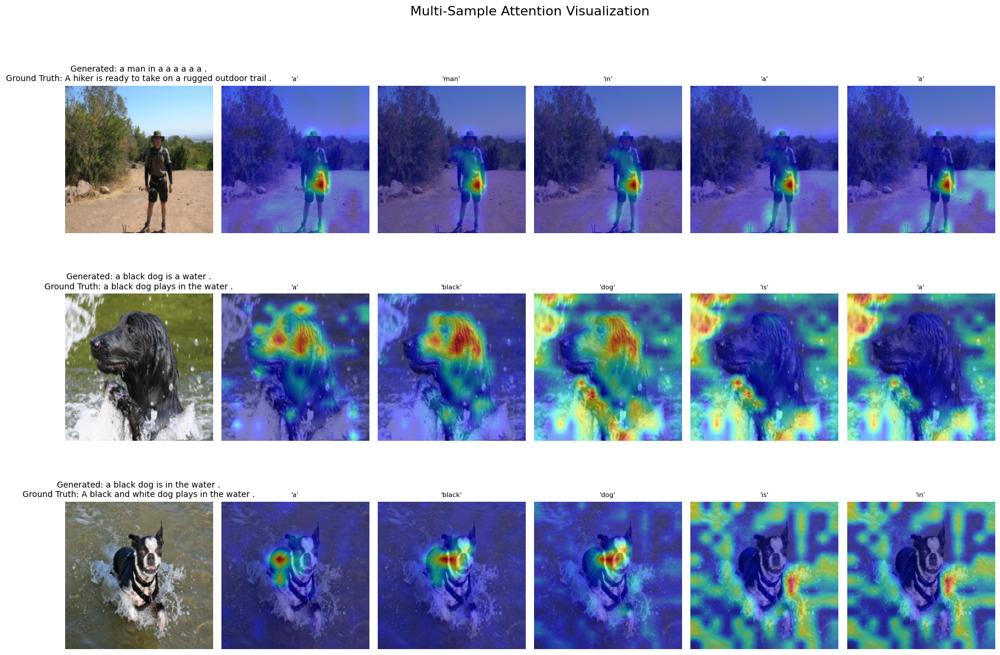
The grounding is real. black and dog settle on the animal in row two; dog lands on the terrier’s face in row three.
The panel below runs the same checkpoint on three more photographs. Pick a word and its own distribution over the 196 patches is drawn on the image. The weights are the model’s, exported from the run, not an illustration.
The explorer decodes with a beam, so its captions hold together. Figure 9 above does not: those captions come from the plotting function’s argmax loop, and its first row reads a man in a a a a a a. Same weights, same attention. The difference is entirely in how the words were chosen.
The captions
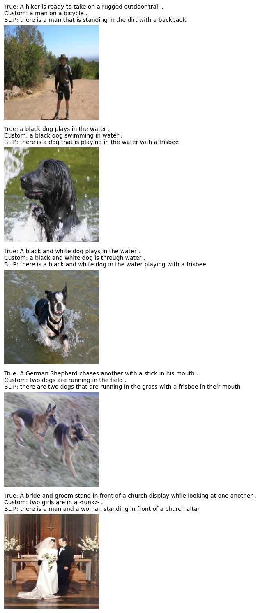
Set side by side, with the failures marked:
<unk> reaches the user. BLIP names the scene; this does not.The <unk> leak is the frequency-5 vocabulary threshold meeting a rare word. It is visible to anyone using the model, which makes it the most obvious thing to fix.
Against BLIP
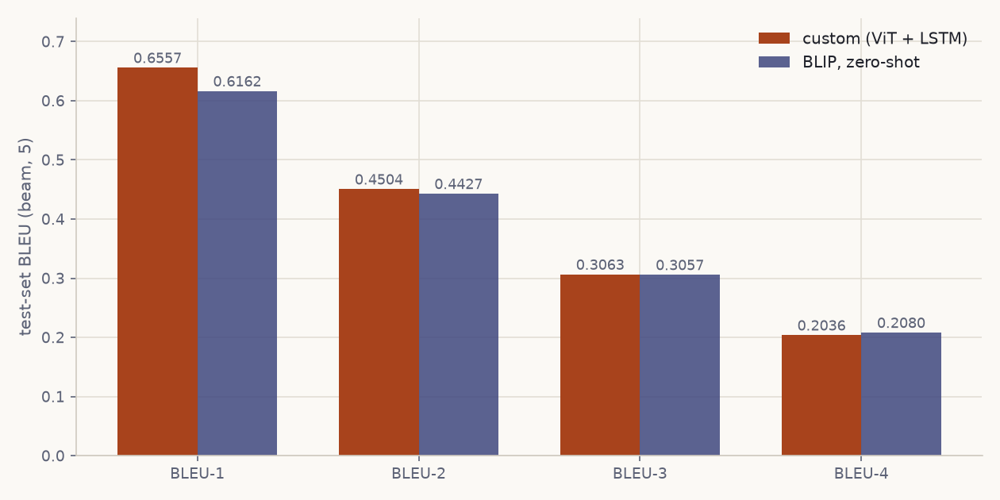
| Custom | BLIP, zero-shot | Δ | |
|---|---|---|---|
| BLEU-1 | 0.6557 | 0.6162 | +0.0395 |
| BLEU-2 | 0.4504 | 0.4427 | +0.0077 |
| BLEU-3 | 0.3063 | 0.3057 | +0.0006 |
| BLEU-4 | 0.2036 | 0.2080 | −0.0044 |
| Average | 0.4040 | 0.3931 | +0.0109 |
Leading on three of four is not beating BLIP. The custom model learned Flickr8k’s register (short, present tense, a black dog …), and BLEU scores overlap with Flickr8k references. BLIP writes there is a dog that is … and loses overlap for phrasing that describes the image perfectly well. Its wedding caption is the best sentence on this page, and it scores below the custom model’s <unk>.
What the table shows: a 45M-parameter model trained for twenty epochs on eight thousand images matches these references about as closely as a large pretrained vision–language model does.
Verdict
BLEU-4 of 0.2036, with validation loss still falling at the final epoch. It names the subject, action and setting on straightforward images, and the attention maps land on the right pixels. It breaks syntax on longer sentences, emits <unk> for rare words, and loses coherence without a beam.
Three things would move it, in order of expected return:
- Train longer. Validation loss never flattened.
- Widen the vocabulary. The
<unk>leak is a threshold choice, not a modelling limit. - Tighten the decoder. An eightfold greedy-to-beam gap points at flat per-token distributions.
The corrections hold under a real run: attention is spatially grounded and visualisable, fine-tuning reaches the unfrozen blocks, selection follows validation loss, and BLEU uses all five references with matched tokenisation on both sides.